pacman::p_load(sf, spatstat, tmap, tidyverse)Hands-on Exercise 2B: Second-order Spatial Point Patterns Analysis
1 Overview
In this hands-on exercise, I use second-order spatial point pattern analysis to examine how childcare centre locations are related to one another at different distances. Unlike first-order analysis, which focuses on changes in point intensity, second-order analysis evaluates whether the observed points show clustering, dispersion, or randomness across a range of spatial scales.
I apply the G-, F-, K-, and L-functions to childcare centres in Choa Chu Kang and Tampines. Monte Carlo simulation envelopes are used to compare each observed pattern with complete spatial randomness (CSR).
2 The Data
I use the two data sets specified in the exercise:
- Child Care Services from data.gov.sg; and
- Master Plan 2019 Subzone Boundary (No Sea) from data.gov.sg.
The GeoJSON files are stored in this exercise’s data/geospatial folder so that the page can be rendered independently with relative paths.
3 Installing and Loading the R Packages
I use sf for geospatial data, spatstat for the second-order analysis, tmap as listed in the exercise, and tidyverse for data preparation.
4 Data Import and Preparation
The preparation follows the same process used in Hands-on Exercise 2A. I import both layers, transform them to Singapore SVY21 (EPSG:3414), remove the specified offshore planning areas, and convert the childcare locations into a planar point pattern.
mpsz_cl <- st_read(
"data/geospatial/MasterPlan2019SubzoneBoundaryNoSea.geojson"
) %>%
st_transform(crs = 3414) %>%
st_make_valid() %>%
filter(
SUBZONE_N != "SOUTHERN GROUP",
PLN_AREA_N != "WESTERN ISLANDS",
PLN_AREA_N != "NORTH-EASTERN ISLANDS"
) %>%
select(
REGION_N,
PLN_AREA_N,
SUBZONE_N,
SUBZONE_C,
geometry
)Reading layer `URA_MP19_SUBZONE_NO_SEA_PL' from data source
`C:\SHKnighter\ISSS608-VAA\Hands-on_Ex\Hands-on_Ex02B\data\geospatial\MasterPlan2019SubzoneBoundaryNoSea.geojson'
using driver `GeoJSON'
Simple feature collection with 332 features and 13 fields
Geometry type: MULTIPOLYGON
Dimension: XY
Bounding box: xmin: 103.6057 ymin: 1.158699 xmax: 104.0885 ymax: 1.470775
Geodetic CRS: WGS 84childcare_sf <- st_read(
"data/geospatial/ChildCareServices.geojson"
) %>%
st_transform(crs = 3414)Reading layer `CHILDCARE' from data source
`C:\SHKnighter\ISSS608-VAA\Hands-on_Ex\Hands-on_Ex02B\data\geospatial\ChildCareServices.geojson'
using driver `GeoJSON'
Simple feature collection with 1925 features and 16 fields
Geometry type: POINT
Dimension: XY
Bounding box: xmin: 103.6878 ymin: 1.247759 xmax: 103.9897 ymax: 1.462134
Geodetic CRS: WGS 84childcare_ppp <- as.ppp(childcare_sf)I extract Choa Chu Kang and Tampines, convert their boundaries into observation windows, and clip the childcare point pattern to each window.
ck <- mpsz_cl %>%
filter(PLN_AREA_N == "CHOA CHU KANG")
tm <- mpsz_cl %>%
filter(PLN_AREA_N == "TAMPINES")
ck_owin <- as.owin(ck)
tm_owin <- as.owin(tm)
childcare_ck_ppp <- childcare_ppp[ck_owin]
childcare_tm_ppp <- childcare_ppp[tm_owin]
childcare_ck_pppMarked planar point pattern: 74 points
Mark variables:
OBJECTID ADDRESSBLOCKHOUSENUMBER ADDRESSBUILDINGNAME ADDRESSPOSTALCODE
ADDRESSSTREETNAME ADDRESSTYPE DESCRIPTION HYPERLINK LANDXADDRESSPOINT
LANDYADDRESSPOINT NAME PHOTOURL ADDRESSFLOORNUMBER INC_CRC FMEL_UPD_D
ADDRESSUNITNUMBER
window: polygonal boundary
enclosing rectangle: [16798.698, 19978.591] x [39008.54, 43037.41] unitschildcare_tm_pppMarked planar point pattern: 117 points
Mark variables:
OBJECTID ADDRESSBLOCKHOUSENUMBER ADDRESSBUILDINGNAME ADDRESSPOSTALCODE
ADDRESSSTREETNAME ADDRESSTYPE DESCRIPTION HYPERLINK LANDXADDRESSPOINT
LANDYADDRESSPOINT NAME PHOTOURL ADDRESSFLOORNUMBER INC_CRC FMEL_UPD_D
ADDRESSUNITNUMBER
window: polygonal boundary
enclosing rectangle: [38199.84, 44859.8] x [32933.55, 39752.73] unitsThere are 74 childcare centre points in the Choa Chu Kang observation window and 117 in the Tampines observation window.
I set a random seed so that the simulation envelopes can be reproduced.
set.seed(1234)5 Second-order Spatial Point Patterns Analysis
For each function, I use the following hypotheses:
- \(H_0\): Childcare centres are randomly distributed in the planning area.
- \(H_1\): Childcare centres are not randomly distributed in the planning area.
The observed function is compared with the CSR simulation envelope. An observed curve outside the envelope indicates a departure from spatial randomness over the corresponding distance range.
6 Analysing the Spatial Point Process Using the G-function
The G-function measures the distribution of nearest-neighbour distances from each observed childcare centre to the next closest centre. A curve above the CSR expectation at short distances indicates that nearest neighbours occur more quickly than expected, which is consistent with clustering.
6.1 Choa Chu Kang
6.1.1 Computing the G-function estimate
G_CK <- Gest(
childcare_ck_ppp,
correction = "border"
)
plot(
G_CK,
xlim = c(0, 500),
main = "G-function for Choa Chu Kang"
)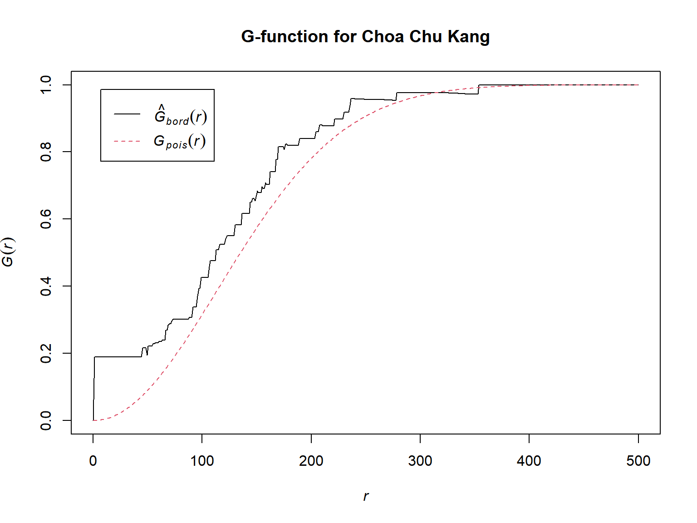
6.1.2 Performing the CSR test
I generate a Monte Carlo envelope using 999 CSR simulations.
G_CK_csr <- envelope(
childcare_ck_ppp,
Gest,
nsim = 999,
verbose = FALSE
)
plot(
G_CK_csr,
main = "CSR envelope for the Choa Chu Kang G-function"
)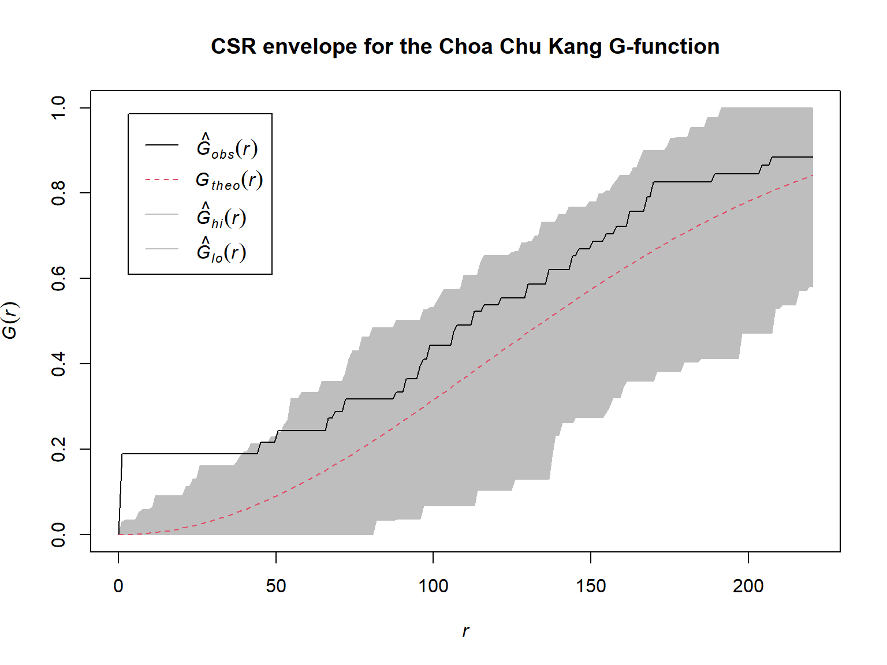
The observed G-function rises outside the CSR envelope over part of the short-distance range. I therefore reject the null hypothesis over those distances. Childcare centres in Choa Chu Kang have shorter nearest-neighbour distances than expected under CSR, indicating local clustering.
6.2 Tampines
6.2.1 Computing the G-function estimate
G_tm <- Gest(
childcare_tm_ppp,
correction = "best"
)
plot(
G_tm,
main = "G-function for Tampines"
)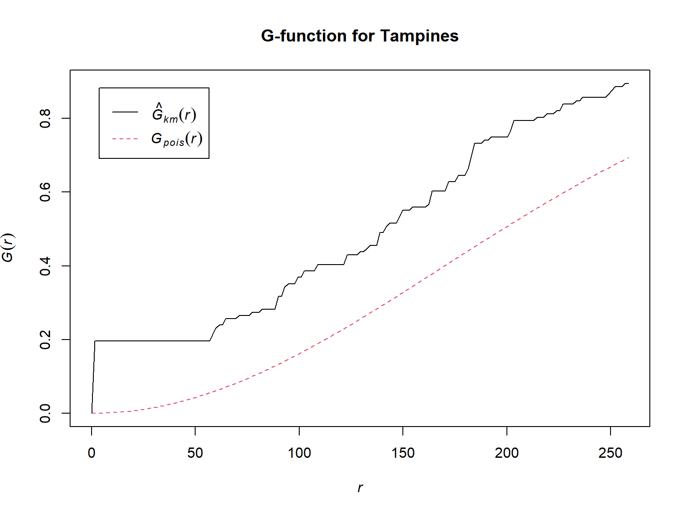
6.2.2 Performing the CSR test
G_tm_csr <- envelope(
childcare_tm_ppp,
Gest,
correction = "all",
nsim = 999,
verbose = FALSE
)
plot(
G_tm_csr,
main = "CSR envelope for the Tampines G-function"
)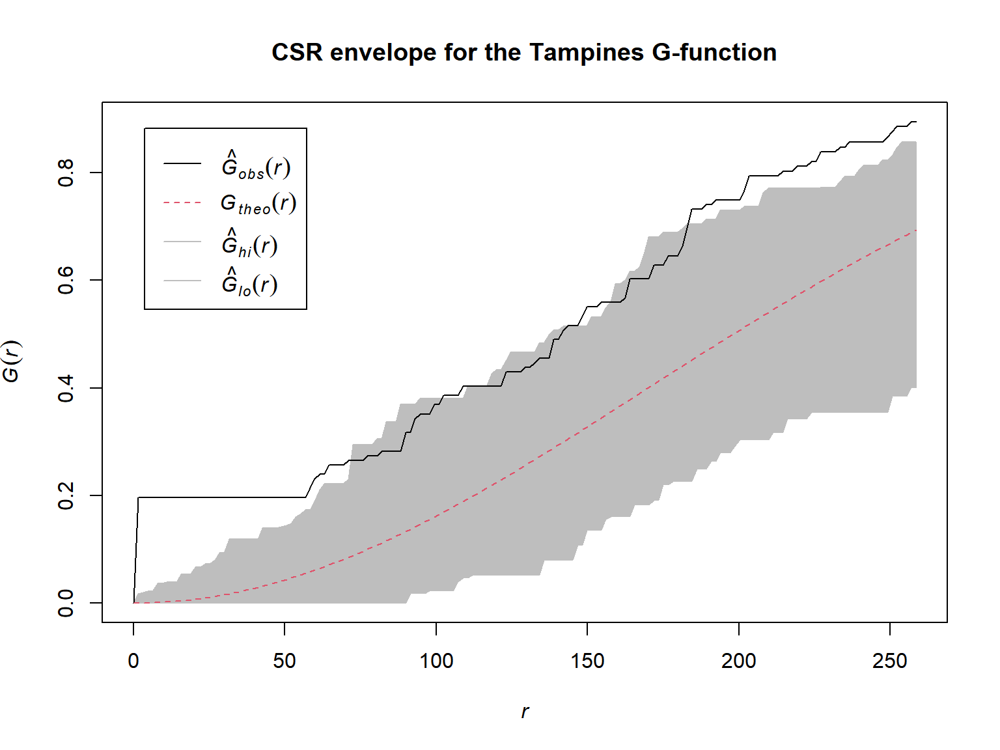
The observed Tampines G-function also leaves the CSR envelope at short distances. I reject the null hypothesis over this range and conclude that the childcare centre pattern has a clustered nearest-neighbour structure.
7 Analysing the Spatial Point Process Using the F-function
The F-function measures distances from arbitrary locations in the observation window to the nearest childcare centre. For a clustered pattern, larger empty spaces remain between groups of points, so the observed F-function is expected to be lower than CSR over part of the distance range.
7.1 Choa Chu Kang
7.1.1 Computing the F-function estimate
F_CK <- Fest(childcare_ck_ppp)
plot(
F_CK,
main = "F-function for Choa Chu Kang"
)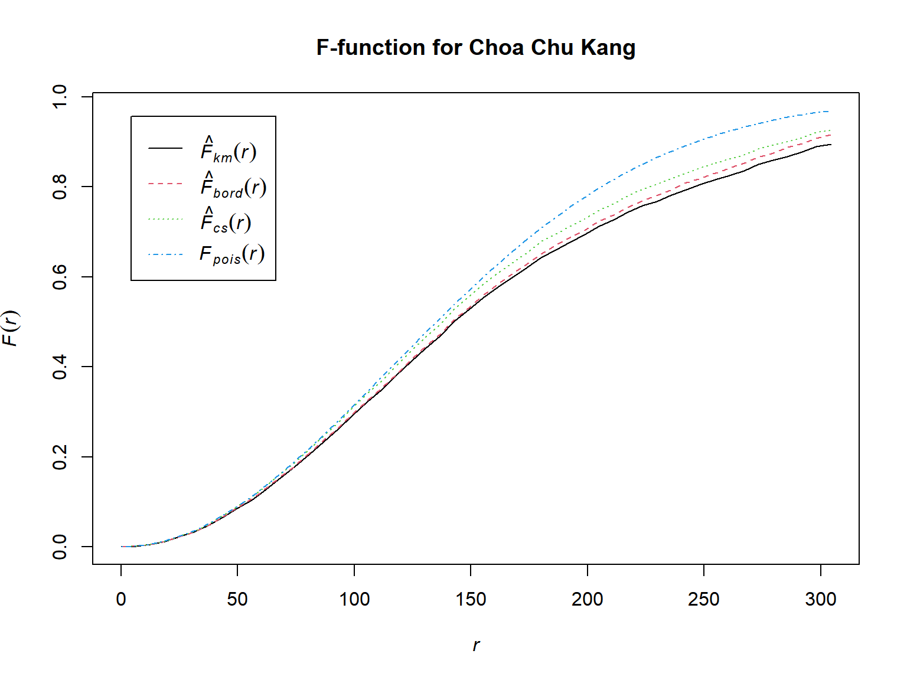
7.1.2 Performing the CSR test
F_CK_csr <- envelope(
childcare_ck_ppp,
Fest,
nsim = 999,
verbose = FALSE
)
plot(
F_CK_csr,
main = "CSR envelope for the Choa Chu Kang F-function"
)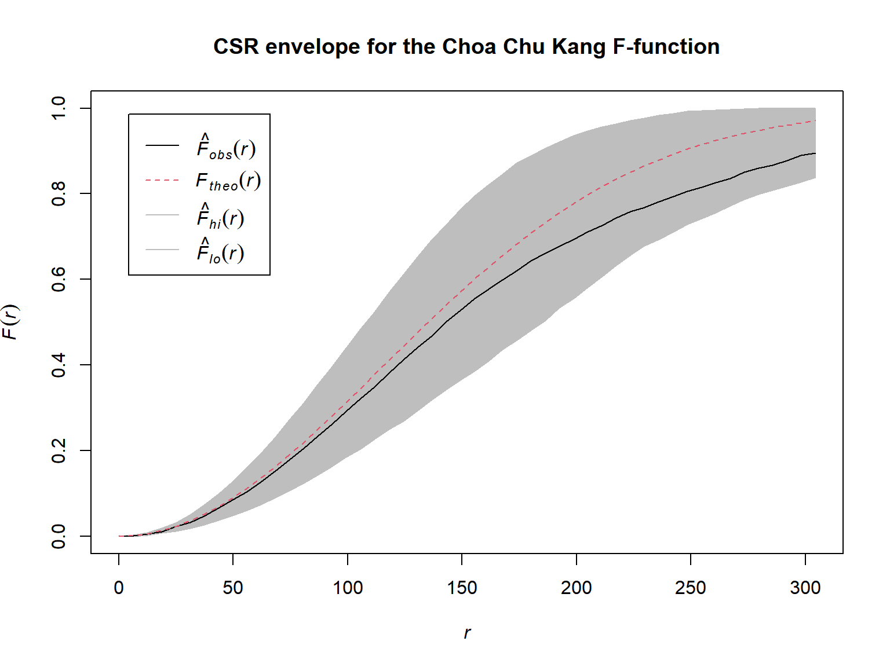
The observed F-function remains within the CSR envelope across the plotted distance range. I therefore fail to reject the null hypothesis for this test. Based on empty-space distances alone, the Choa Chu Kang F-function does not provide sufficient evidence of a departure from CSR.
7.2 Tampines
7.2.1 Computing the F-function estimate
F_tm <- Fest(
childcare_tm_ppp,
correction = "best"
)
plot(
F_tm,
main = "F-function for Tampines"
)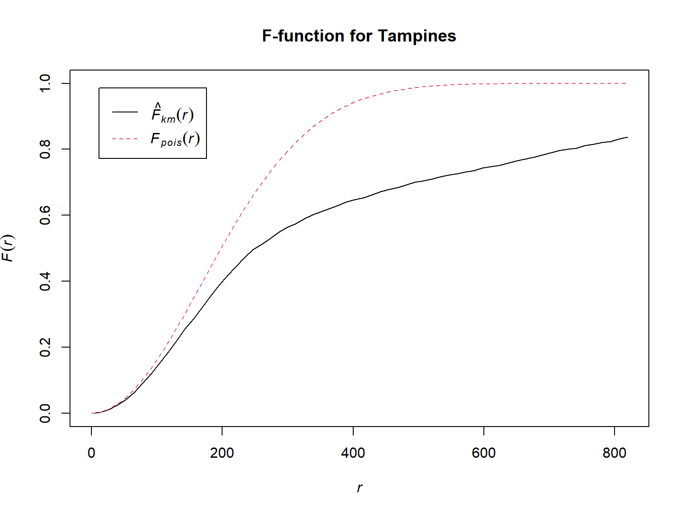
7.2.2 Performing the CSR test
F_tm_csr <- envelope(
childcare_tm_ppp,
Fest,
correction = "all",
nsim = 999,
verbose = FALSE
)
plot(
F_tm_csr,
main = "CSR envelope for the Tampines F-function"
)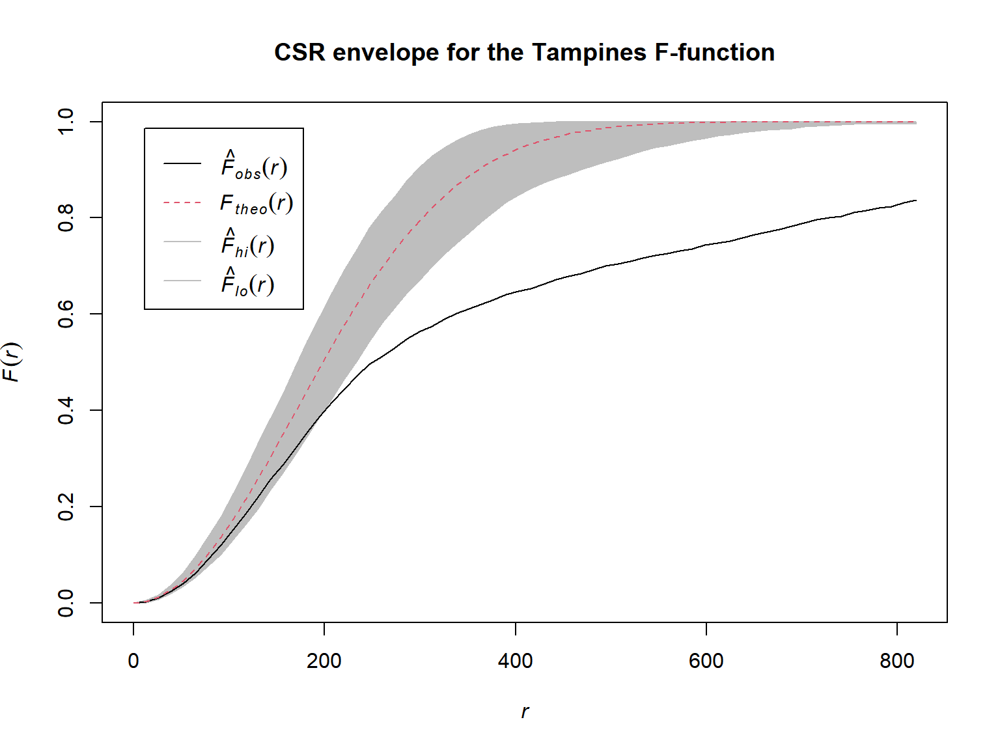
The observed F-function for Tampines departs from the CSR envelope. I reject the null hypothesis over the affected distances. The lower observed F-values indicate empty spaces between groups of childcare centres and support a clustered pattern.
8 Analysing the Spatial Point Process Using the K-function
The K-function evaluates the expected number of further events found within a given distance of an event. Following the professor’s workflow, I plot \(K(d)-d\) against distance. Values above the CSR envelope indicate more neighbouring centres within that distance than expected under randomness.
8.1 Choa Chu Kang
8.1.1 Computing the K-function estimate
K_ck <- Kest(
childcare_ck_ppp,
correction = "Ripley"
)
plot(
K_ck,
. - r ~ r,
ylab = "K(d)-r",
xlab = "d (m)",
main = "K-function for Choa Chu Kang"
)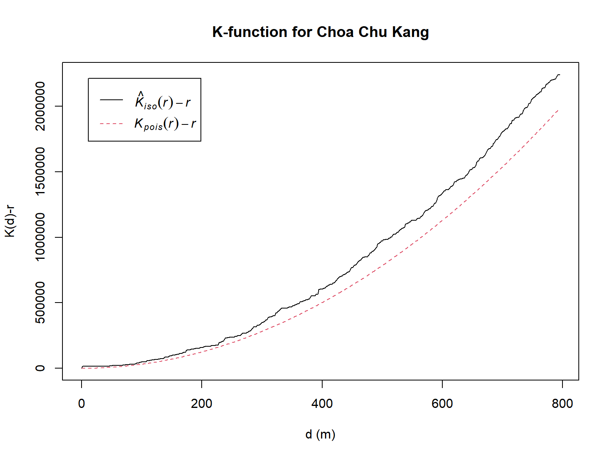
8.1.2 Performing the CSR test
K_ck_csr <- envelope(
childcare_ck_ppp,
Kest,
nsim = 99,
rank = 1,
glocal = TRUE,
verbose = FALSE
)
plot(
K_ck_csr,
. - r ~ r,
xlab = "d (m)",
ylab = "K(d)-r",
main = "CSR envelope for the Choa Chu Kang K-function"
)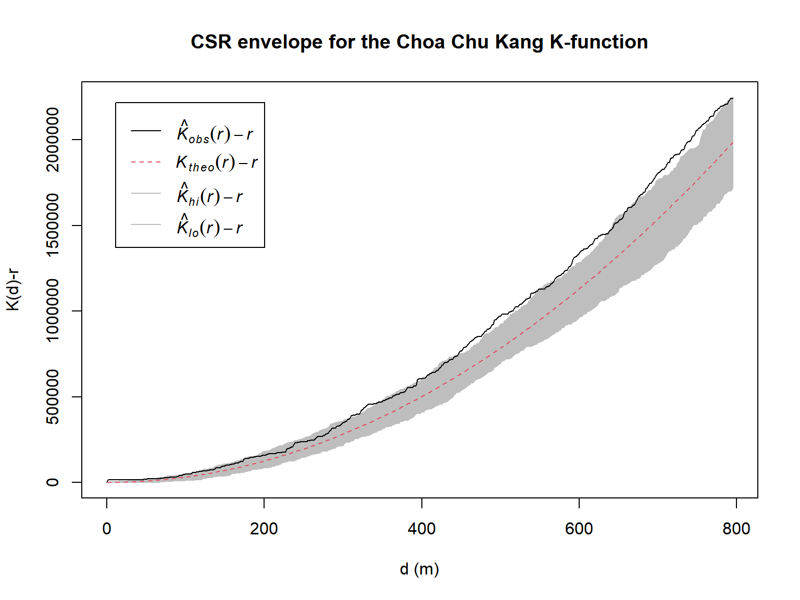
The observed K-function lies above the CSR envelope over part of the distance range. I reject the null hypothesis over those distances because there are more neighbouring childcare centres than expected under CSR. This indicates clustering in Choa Chu Kang.
8.2 Tampines
8.2.1 Computing the K-function estimate
K_tm <- Kest(
childcare_tm_ppp,
correction = "Ripley"
)
plot(
K_tm,
. - r ~ r,
ylab = "K(d)-r",
xlab = "d (m)",
xlim = c(0, 1000),
main = "K-function for Tampines"
)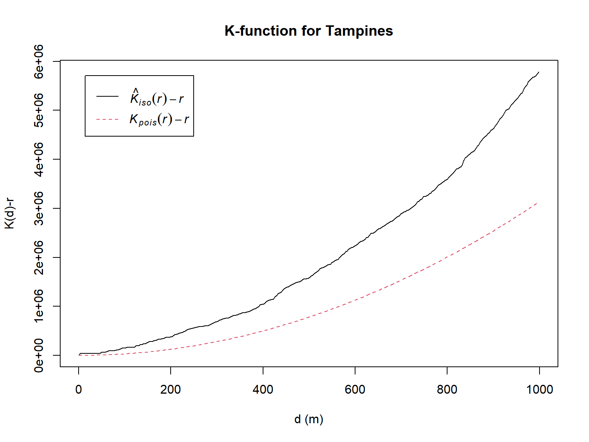
8.2.2 Performing the CSR test
K_tm_csr <- envelope(
childcare_tm_ppp,
Kest,
nsim = 99,
rank = 1,
glocal = TRUE,
verbose = FALSE
)
plot(
K_tm_csr,
. - r ~ r,
xlab = "d (m)",
ylab = "K(d)-r",
xlim = c(0, 500),
main = "CSR envelope for the Tampines K-function"
)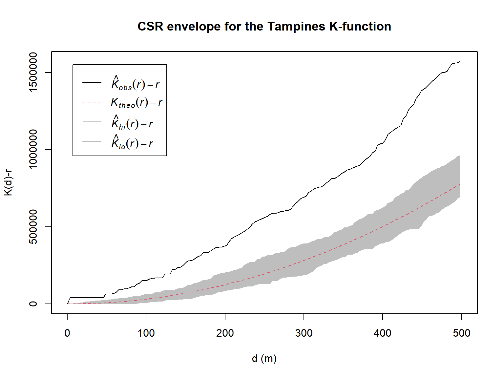
The Tampines K-function exceeds the CSR envelope over part of the plotted distance range. I reject the null hypothesis over those distances and conclude that childcare centres are clustered at those spatial scales.
9 Analysing the Spatial Point Process Using the L-function
The L-function is a transformed version of the K-function. Following the exercise, I plot \(L(d)-d\) so that the CSR reference is easier to compare with the observed pattern. Positive departures above the CSR envelope indicate clustering.
9.1 Choa Chu Kang
9.1.1 Computing the L-function estimate
L_ck <- Lest(
childcare_ck_ppp,
correction = "Ripley"
)
plot(
L_ck,
. - r ~ r,
ylab = "L(d)-r",
xlab = "d (m)",
main = "L-function for Choa Chu Kang"
)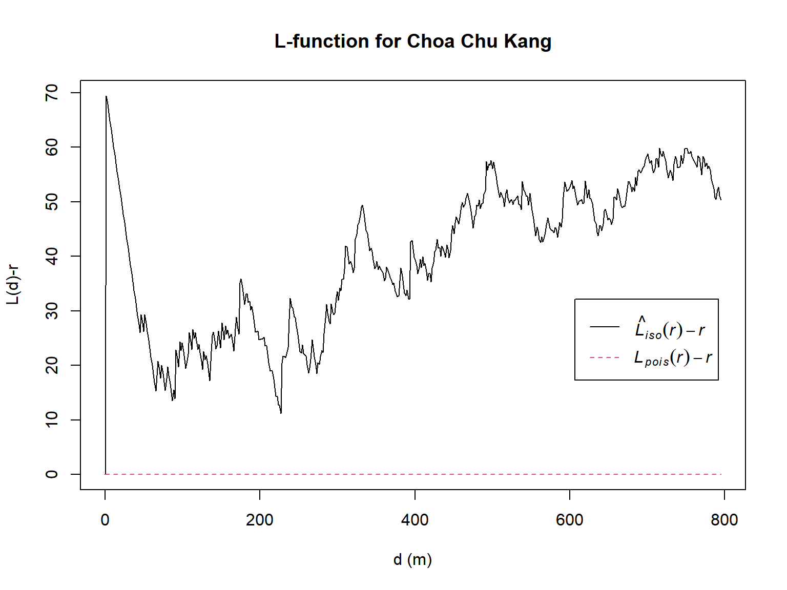
9.1.2 Performing the CSR test
L_ck_csr <- envelope(
childcare_ck_ppp,
Lest,
nsim = 99,
rank = 1,
glocal = TRUE,
verbose = FALSE
)
plot(
L_ck_csr,
. - r ~ r,
xlab = "d (m)",
ylab = "L(d)-r",
main = "CSR envelope for the Choa Chu Kang L-function"
)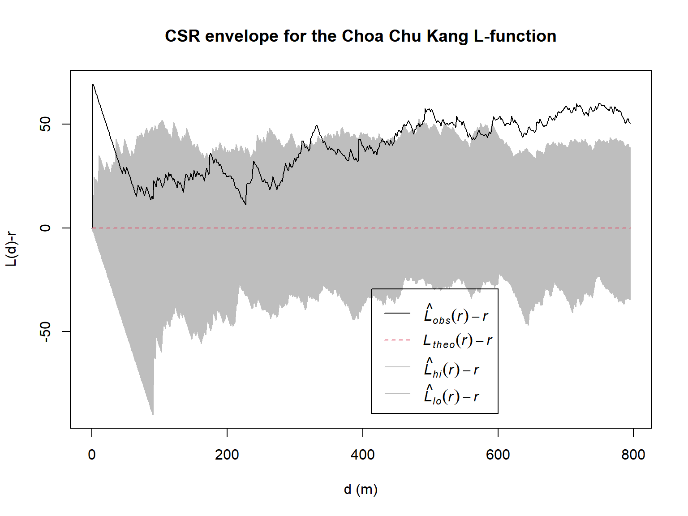
The observed L-function is above the CSR envelope over part of the distance range. I reject the null hypothesis over those distances and interpret the positive departure as evidence of clustering in Choa Chu Kang.
9.2 Tampines
9.2.1 Computing the L-function estimate
L_tm <- Lest(
childcare_tm_ppp,
correction = "Ripley"
)
plot(
L_tm,
. - r ~ r,
ylab = "L(d)-r",
xlab = "d (m)",
xlim = c(0, 1000),
main = "L-function for Tampines"
)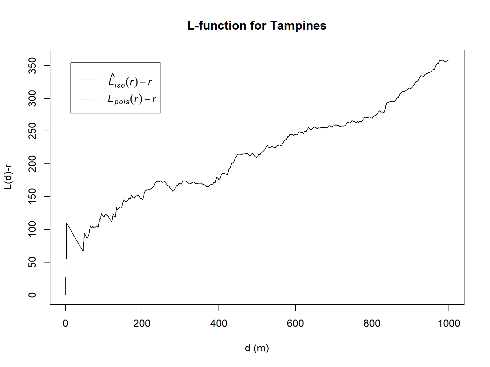
9.2.2 Performing the CSR test
L_tm_csr <- envelope(
childcare_tm_ppp,
Lest,
nsim = 99,
rank = 1,
glocal = TRUE,
verbose = FALSE
)
plot(
L_tm_csr,
. - r ~ r,
xlab = "d (m)",
ylab = "L(d)-r",
xlim = c(0, 500),
main = "CSR envelope for the Tampines L-function"
)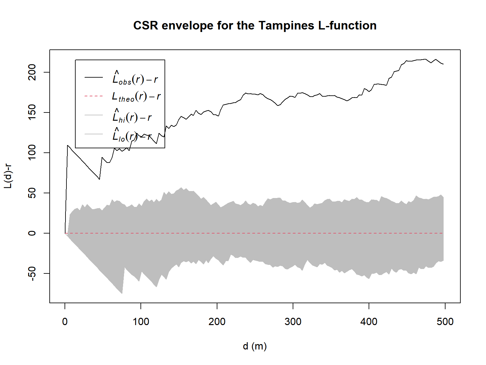
The observed Tampines L-function rises above the CSR envelope over part of the plotted distance range. I reject the null hypothesis over those distances and conclude that the point pattern shows clustering at those spatial scales.